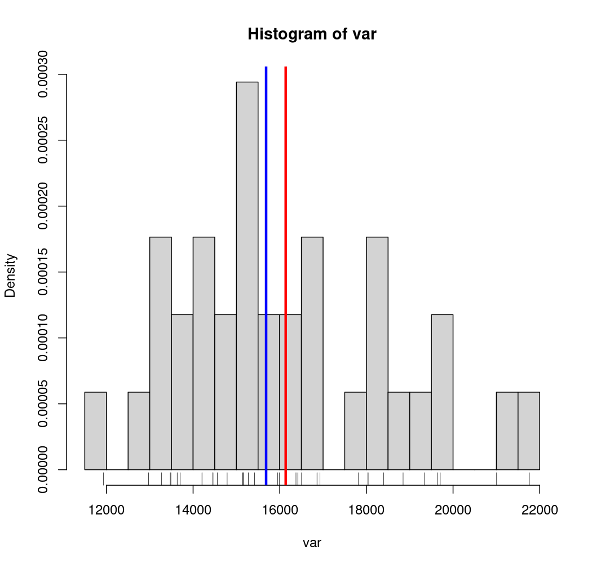
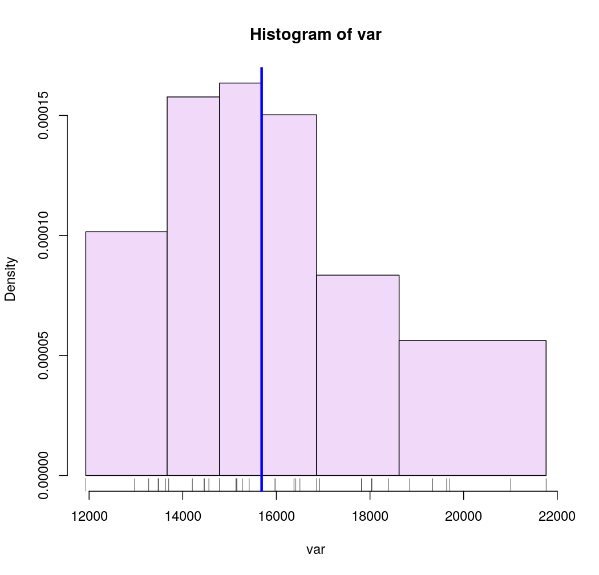
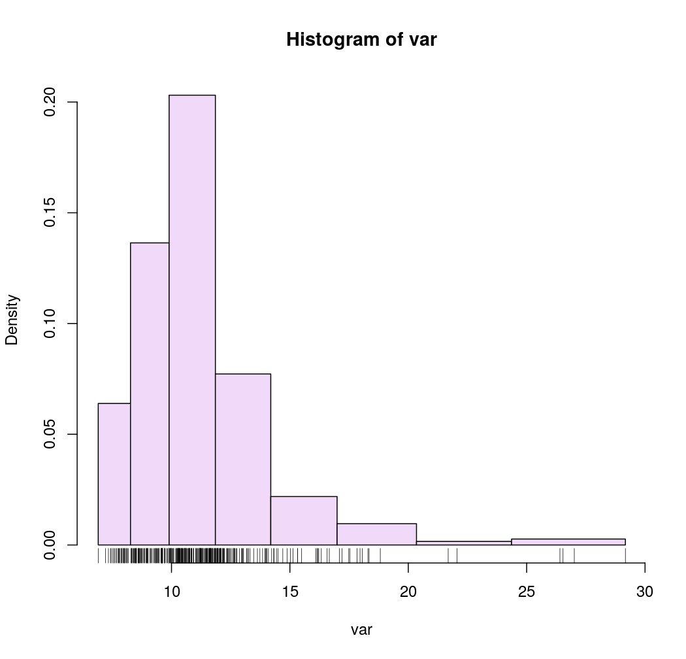
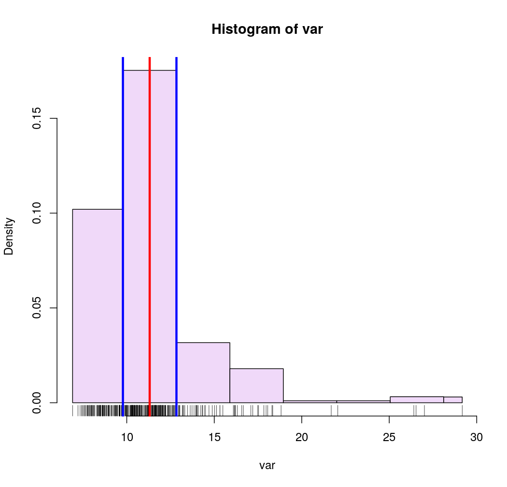

A function to classify continuous variables.
getBreaks(v, nclass = NULL, method = "quantile", k = 1, middle = FALSE)
| v | a vector of numeric values. |
|---|---|
| nclass | a number of classes |
| method | a classification method; one of "sd", "equal", "quantile", "fisher-jenks","q6", "geom", "arith", "em" or "msd" (see Details). |
| k | number of standard deviation for "msd" method (see Details).. |
| middle | creation of a central class for "msd" method (see Details). |
A numeric vector of breaks
"sd", "equal", "quantile" and "fisher-jenks" are classIntervals methods.
Jenks and Fisher-Jenks algorithms are based on the same principle and give
quite similar results but Fisher-Jenks is much faster.
The "q6" method uses the following quantile probabilities: 0, 0.05, 0.275, 0.5, 0.725, 0.95, 1.
The "geom" method is based on a geometric progression along the variable values.
The "arith" method is based on an arithmetic progression along the variable values.
The "em" method is based on nested averages computation.
The "msd" method is based on the mean and the standard deviation of a numeric vector.
The nclass parameter is not relevant, use k and middle instead. k indicates
the extent of each class in share of standard deviation. If middle=TRUE then
the mean value is the center of a class else the mean is a break value.
This function is mainly a wrapper classInt::classIntervals + arith, em, q6, geom and msd methods.
#> Reading layer `mtq' from data source `/home/tim/Documents/pkg/cartography/inst/gpkg/mtq.gpkg' using driver `GPKG' #> Simple feature collection with 34 features and 7 fields #> geometry type: MULTIPOLYGON #> dimension: XY #> bbox: xmin: 690574 ymin: 1592536 xmax: 735940.2 ymax: 1645660 #> epsg (SRID): 32620 #> proj4string: +proj=utm +zone=20 +datum=WGS84 +units=m +no_defsrug(var)# Quantile intervals breaks <- getBreaks(v = var, nclass = 6, method = "quantile") hist(var, probability = TRUE, breaks = breaks, col = "#F0D9F9")rug(var)# Geometric intervals breaks <- getBreaks(v = var, nclass = 8, method = "geom") hist(var, probability = TRUE, breaks = breaks, col = "#F0D9F9")rug(var)# Mean and standard deviation (msd) breaks <- getBreaks(v = var, method = "msd", k = 1, middle = TRUE) hist(var, probability = TRUE, breaks = breaks, col = "#F0D9F9")rug(var)